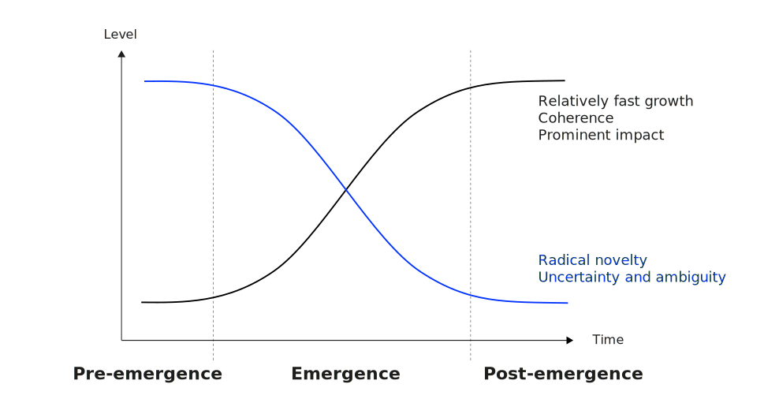

Future Technologies & Media (FTM)
Neu-Ulm University of Applied Sciences
February 21, 2025
Rotolo, Hicks, and Martin (2015) outlines five attributes that classify emerging technologies and differentiate them from other technologies:

During the late 18th century and the early 19th century, the steam engine was considered an emerging technology.
Why?
Tech classified as AI definitely qualify as emergent technologies.
What are distinct characteristics of emerging technologies in the digital age?
Emerging information technologies enable multimodal and immersive experiences.
Which senses have you used when you have interacted with (information) technology?
Give examples.
For traditional computers, humans are reduced to an eye and a finger.
Courtesy Dan O’Sullivan and Tom Igoe.
Multimodality
Using more than one mode of communication to create meaning.
Multimodality emphasizes the importance of multiple modes (e.g., verbal, visual, spatial) to form overall understanding of a message.
Multimedia
Using more than one media to express meaning.
Multimedia emphasizes the medium or technology used to present information.
It refers to content that uses two or more media formats.
Every multimodal project is multimedia
as it uses multiple methods.
Not every multimedia project is multimodal
as it might just throw different media together without considering how they work together.
Improved accuracy and robustness, enhanced bandwidth, flexibility and user preference, naturalness and ease of use, redundancy and error correction, accessibility, support for complex tasks.
Modality examples
Break down the multimodal interactions across visual, auditory, and haptic modalities for both input and output, distinguishing between data (i.e., the contents of the interaction) and control aspects (i.e., information that is needed to make the interaction happen).
Take 15 minutes to find examples for data input, control input, data output, and control output for each modality.
Multimodal fusion
The integration of communication modalities in interactive systems (Input)
and
Multimodal fission
The re-partitioning of information among several communication modalities (Output)
Find specific examples for multimodal technologies (i.e., products).
Take 10 minutes for your research. Prepare to present your findings.
Form small groups and synthesize your findings from reading Suh and Prophet (2018) by findings answers to following questions:
Take 20 minutes to synthesize your findings and to create a short presentation.
Immersion refers to the state of being deeply engaged, absorbed, or submerged in an environment, either physically or mentally.
Immersion implies that the consciousness of the immersed person is detached from their physical self. Immersiveness is the quality or degree of being immersive.
Immersive technology blurs the line between the physical, virtual, and simulated worlds, thereby creating a sense of immersion.
Technology has different abilities to create a sense of presence and engagement in the user.
The feeling of immersion is created by temporarily altering a person’s sense of presence by tricking their cognitive and perceptual systems into believing they are in a place other than their actual physical location.
Important stimuli that determine the immersiveness of environments created by technology are
Visual stimuly, auditory stimuly, tactile stimuli, olfactory stimuly, and interactive stimuly.
In order to create these, technology needs visual display with hihg representational fidelity and media, auditory and haptic interfaces and the capability to track movements.
Augmented reality refers to the combination of a real scene viewed by a user with a virtual scene that augments the scene with additional information.
AR technology superimposes virtual objects onto a live view of physical environments, helping users visualize how these objects fit into their physical world.
AR technologies require following hardware components:
Advancements in mobile computing and telecommunications infrastructures (will) increase the mobility and, thus, usability of these devices significantly.
What are examples of AR technologies?
Briefly introduce the example and name application fields and benefits.
Virtual Reality refers to technology that generates an interactive virtual environment that is designed to simulate a real life experience.
VR technology reveals different levels of immersion ranging from non-immersive VR (e.g., second life) to immersive VR (e.g., PlayStation VR2).
Search for immersive technologies used in the healthcare context.
Take 15 minutes to research and portray a technology as well as to discuss the reasons for the prominent impact of immersive technologies in the healthcare context. Prepare yourself to present your findings.